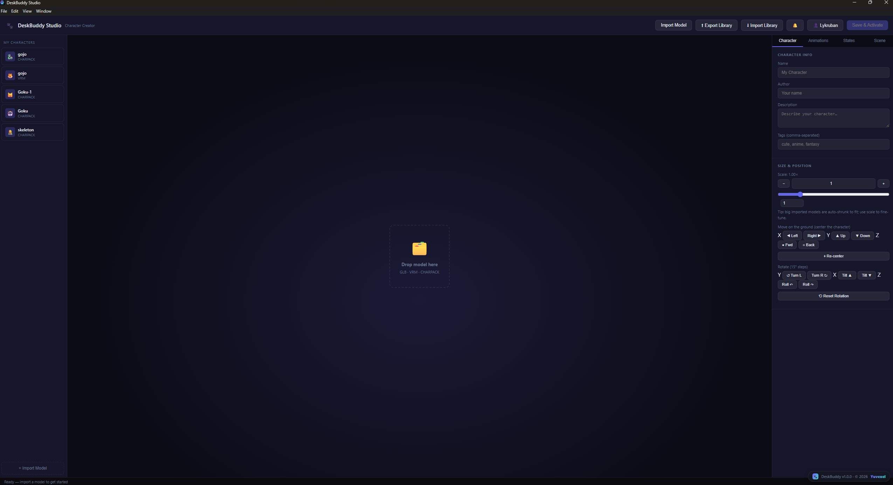
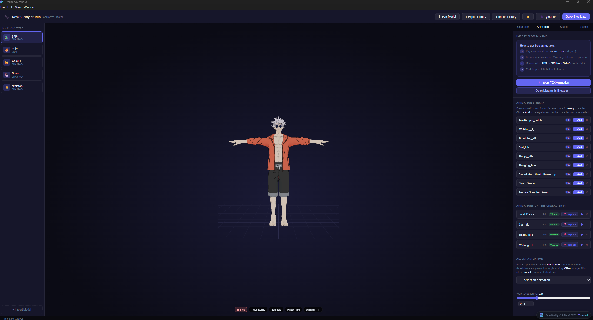
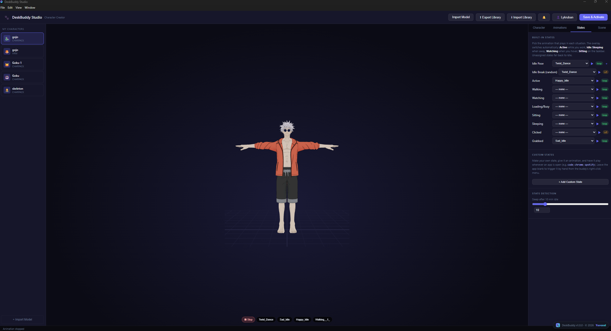
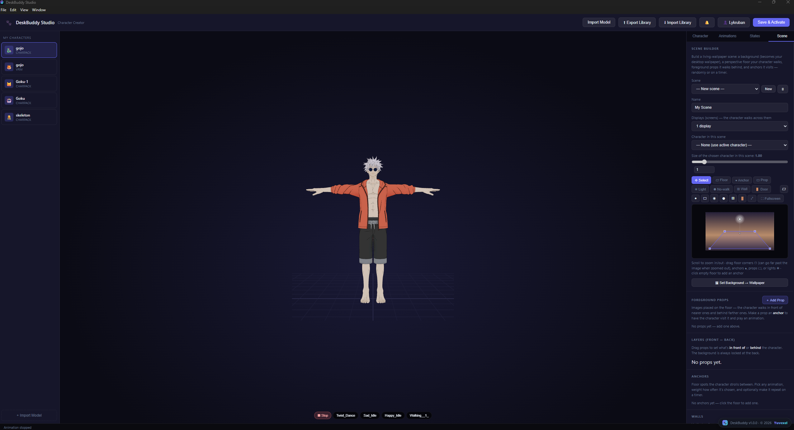
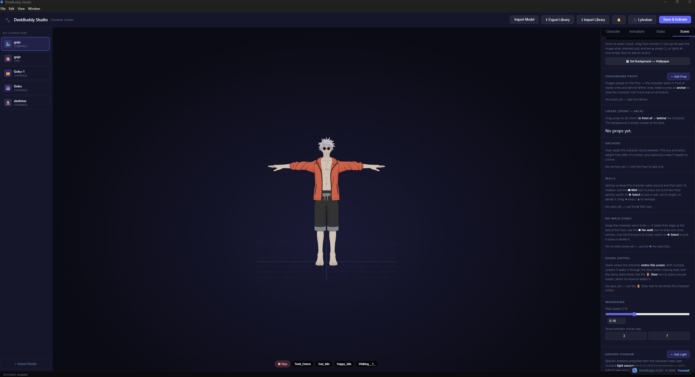
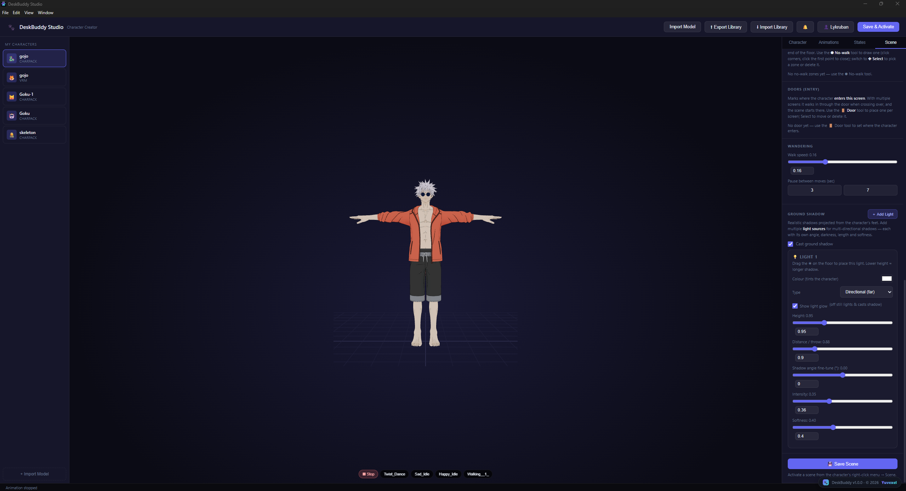

Documentation
Everything DeskBuddy does, tab by tab. Use the directory on the left to jump around.
Install & first launch
- Download the installer and run it. If Windows warns about an "unknown publisher", click More info → Run anyway. If it says SmartScreen is unreachable: right-click the file → Properties → tick Unblock → Apply.
- DeskBuddy starts in buddy mode — a character appears on your desktop and a 🐾 paw icon appears in the system tray (bottom-right, near the clock).
- That tray icon is mission control — everything starts there.
The tray menu
Right-click the 🐾 tray icon:
- 📬 Messages — your update inbox (see Messages).
- Show / Hide Buddy — toggle the character.
- Scene ▸ — activate any saved scene, or exit back to buddy mode.
- Click to Move — when ON, clicking the scene floor sends the character there.
- Random Walking — when OFF, the character stays put in scenes (it keeps idling; Click to Move still works if you enable it).
- Quality / Frame rate / Light & Shadow / Cast Shadow — performance and looks. Low + 30 FPS is nearly free on any modern PC.
- Character Studio — the creation app (below).
Buddy mode
The character lives on top of your windows and switches animation automatically: Active while you're working, Idle when you pause, Watching when you hover it, Sleeping after long idle (threshold configurable in the Studio).
- Drag it — press and drag to move it anywhere. If a Grabbed animation is assigned, it plays while held.
- Click it — opens its menu (move, sit, states, studio, settings).
- Double-click — plays the Clicked reaction, if assigned.
Character Studio — overview

Open it from the tray. You'll be asked to sign in (free account — it links your library and, later, the marketplace). The left sidebar lists your characters; the top bar has Import Model, Export / Import Library, the 🔔 inbox, and Save & Activate — which saves your work and makes that character the live buddy.
The right panel has four tabs: Character · Animations · States · Scene.
Character tab
Import and fit your model.
- Formats: GLB, GLTF, VRM, FBX, OBJ (+MTL), DAE, STL, PLY, 3MF.
- Size — the − / + buttons scale the character.
- Position — nudge left/right/up/down/forward/back; ⌖ Re-center resets.
- Rotation — turn/tilt/roll to face the camera; ⟲ Reset Rotation resets.
Animations tab

Give the character motion.
- Import FBX Animation — add clips (the ▶ next to each previews it).
- Get animations from Mixamo — free library; download as FBX, without skin, then import here. Clips are retargeted onto your character automatically.
- Animation Library — imported clips are saved globally, so every character can reuse them.
- In place vs Move on — for clips that travel (walks, jumps forward): In place plants the character; Move on commits the clip's movement, so the character actually travels across the scene and continues from where it lands.
- Speed / offset adjustments — fine-tune any clip's playback.
States tab

Map animations to situations. Anything unassigned falls back to Idle — the character never freezes.
- Idle Pose — the default stance. Click ＋ to add Idle 2, Idle 3… — the character picks one at random each time it idles, so it never looks robotic.
- Idle Break — an occasional stretch/look-around played between idles.
- Active / Walking / Watching / Loading / Sitting / Sleeping — automatic situations.
- Clicked — plays once when double-clicked.
- Grabbed — plays while you drag the buddy.
- Custom states — your own state tied to an app: e.g. play a headbang clip whenever
spotifyis running. Leave the app blank to trigger it by hand from the buddy's menu. - Sleep after N min — how long before the buddy dozes off.
Scene tab — the Scene Editor


Build the world your buddy lives in. A scene is one room per monitor.
- Displays — how many monitors the scene spans (each becomes a room).
- Background — the room's wallpaper image.
- Floor — drag the four corners of the floor quad to match your image's perspective. This is what makes the character walk "into" the picture and shrink with distance.
- Anchors — spots the character visits while wandering: position, facing, an animation to play, dwell time, weight (how often), and optional repeat every N minutes for scheduled visits.
- Props — foreground images placed in the room; optionally clickable, walking the character over to play an animation.
- Walls — vertical surfaces the character walks around and casts shadows onto.
- No-walk zones — polygons the character must path around.
- Doors — where the character crosses between rooms/screens (see below).
- Lights & shadows — place lights (color, intensity, height); the character is lit by them and casts a matching shadow. Per-scene shadow settings included.
- Wander — walk speed and idle timing for this scene.

Tips: middle-mouse pans the editor canvas, X deletes the selected item, the room switcher swaps monitors, and ⛶ Fullscreen gives you the whole screen to edit. Save Scene stores it; activate it from the tray's Scene menu.
Living-wallpaper scenes
Activate a scene from the tray → Scene. Your wallpaper becomes the scene and the character lives inside it — wandering between anchors, avoiding walls, visiting props.
- Click to Move (tray) — click anywhere on the floor to send the character there.
- Random Walking (tray) — turn OFF to park the character (it keeps idling and still responds to clicks).
- Clickable props — enable in the buddy menu to click scene props directly.
- Exit Scene — tray → Scene → Exit; your original wallpaper is restored.
Doors & transition effects
On multi-monitor scenes, place a door in each room — that's where the character crosses between screens. Select a door in the Scene Editor to choose its transition effect:
- 🌀 Portal — a glowing ring opens; the character glides in and re-emerges.
- ✨ Particles — dissolves into pieces that stream through the door.
- 📡 Teleport beam — scanned away line by line, sci-fi style.
- 🌪️ Vortex — spins into the door.
- 🌫️ Light fade — a clean, subtle crossfade.
- 💨 Poof — gone in a puff of smoke.
Each door can have a different effect. Watch them on the home page gallery.
Sign-in & recovery code
The Studio asks you to create a free account (username + password; email optional). On sign-up you get a one-time recovery code — save it somewhere safe: it's the offline way back into your account if you forget your password. Password reset lives at Forgot password? on the sign-in screen.
Export / import your library
Top bar of the Studio:
- ⬆ Export Library — copies all your characters, animations and scenes into a
portable
DeskBuddyLibraryfolder anywhere you choose. - ⬇ Import Library — load such a folder on another PC (choose Merge to add, or Replace to mirror). Your whole setup travels with you.
Messages inbox
The 🔔 bell in the Studio (and 📬 Messages in the tray) is your permanent inbox: a welcome note, app updates, and announcements land there. Nothing is ever deleted.
Troubleshooting
- Windows blocks the installer — More info → Run anyway, or right-click → Properties → Unblock. The app isn't code-signed yet; it's safe.
- No character on screen — tray → Show Buddy. Still nothing? Open the Studio and Save & Activate a character.
- Performance — tray → Quality Low + 30 FPS.
- A scene looks wrong after editing — re-select it from the tray's Scene menu to reload it.
- Anything else — report it with what you did and what happened. We read everything.